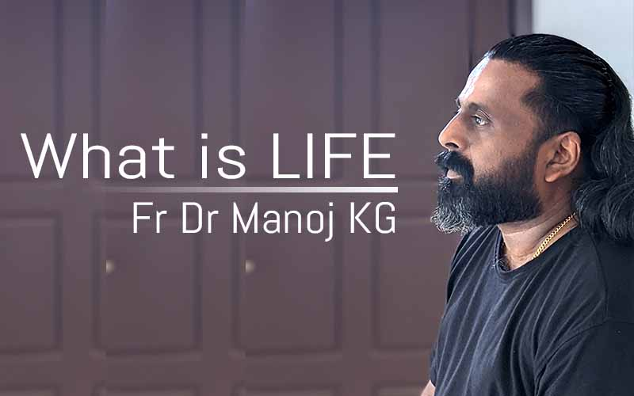

What is life?
A proper Life is a state made for a mission and made operational with the help of external factors for that mission. There are two kinds of Life in man. Why can't man find happiness, peace, contentment and joy in LIFE today? Why does man get only frustration, anxiety, depression and anger in LIFE today? Why doesn't LIFE change no matter what you think, no matter how hard you work? Why do physical and mental diseases, disorders and sufferings arise ? Is there any reason behind all this? Is there any way to get rid of this?
Crow uses his senses only to carry out the task of Waste Management, which it was created and does not receive the necessary knowledge from outside, relying only on what God has given him at birth. Similarly, ants, squirrels, lizards etc. do not go anywhere to acquire knowledge, they always live happily and contentedly by doing creative work through the knowledge instilled in them at birth.This is where man needs to understand and return to why he was created.
The Neurobiology of Everyday Life. Everyday life, daily life or routine life comprises the ways in which people typically act, think, and feel on a daily basis.
Go through the below video content to know the subject in depth. These videos are in malayalam language and we may come up with other languages very soon...
| Video |
|---|
|
Lesson 1
|
|
Lesson 2
|
|
Lesson 3
|
At birth, we are trained to sustain physical life. But the life in our spirit remains as a seed without sprouting. Let's see in the next session how we can nurture and nurture our spiritual life in a fruitful way.
Similarly, we will see in another session how we can activate the senses of our spirit to see, hear and feel divine things.
Thank You!